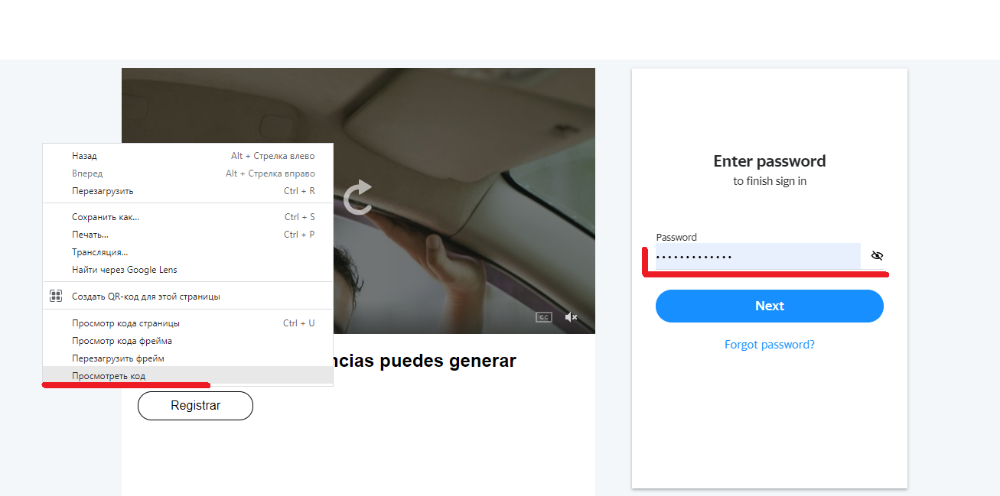
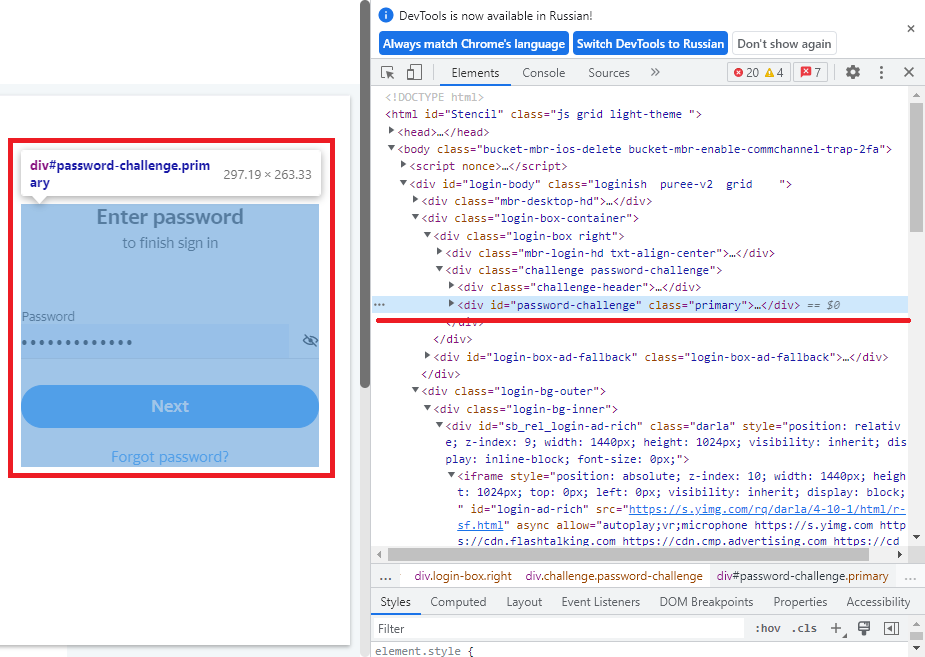
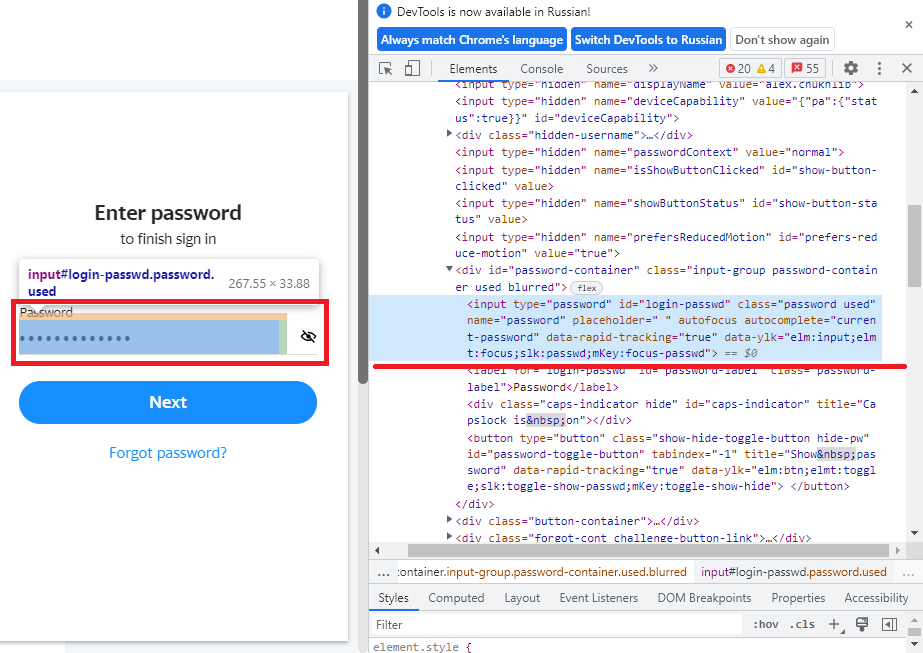
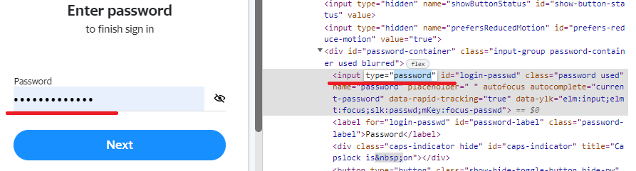
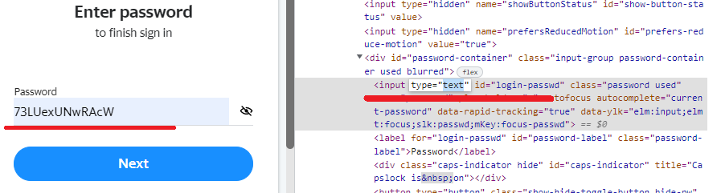

|
маленькие лайфарики
. топлайфарик №1 |
|---|
В этой статье мы узнаем как увидеть пароль вместо точек (звёздочек), в строке любого браузера.Как увидеть пароль вместо точек, на любом сайте, в любом браузере, без особых усилий и сторонних программ. Для этого не надо быть программистом. Не забудьте сохранить ТОПЛАЙФАРИК в закладки браузера! Сейчас я вам расскажу как быстро и в любом, не важно каком браузере, будь то chrome, firefox, Edge или Opera, увидеть пароль в строке password, если вдруг вы его забыли, а может быть и не знали вовсе. Способ подходит только если браузер или сайт уже запомнил ваш пароль, и в строке ввода пароля он есть, но видно лишь одни точки. Итак, приступим. Для этого нам понадобиться сделать пять шагов: Шаг 1: Зайдите на страницу, где у нас на сайте точки вместо пароля. И нажмите в любом пустом пространстве сайта ПКМ (правую кнопку мыши). У нас появится небольшое меню, где нужно выбрать "просмотреть код". Шаг 2: У вас появится, с правой стороны, панель с исходным кодом страницы. Шаг 3: Далее, во вкладке "Elements", нужно проводить мышкой, открывая строки, до тех пор, пока синим не выделиться, только лишь, наш блок с паролем. Вот так: Шаг 4: В блоке находим значение type="password", выделяем слово password, и вместо него пишем text. Шаг 5: Жмём ENTER и смотрим на наш пароль.  |
Меню |
Общая информацияТекст общей информации или реклама |
Теперь вы знаете как посмотреть пароль вместо точек, в любом браузере.Удачи;) |
|---|